مفصل الركبةKnee Joint
نظري · م06 · 10.0 دقيقةأقسام المحاضرة (10)
- مفصل الركبةThe Knee Joint
- الأسطح المفصليةArticulating Surfaces
- كبسولة مفصل الركبةKnee Joint Capsule
- الغضروفان الهلاليانMenisci (meniscus)
- الأجربةBursae
- الأربطةLigaments
- الملامح الشعاعية لمفصل الركبةRadiological features of the knee joint
- الأشعة السينية البسيطة للركبةPlain X-ray (Radiography) of the Knee
- التصوير المقطعي المحوسب للركبةCT Scan (Computed Tomography) of the Knee
- الرنين المغناطيسي للركبةMRI of the Knee
مفصل الركبةThe Knee Joint
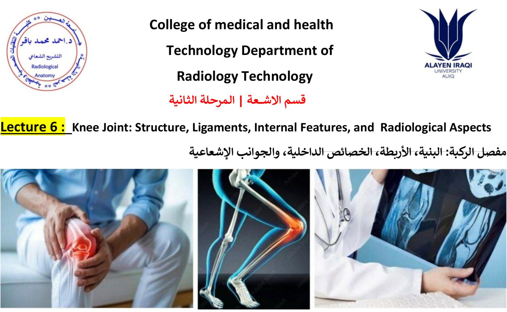
المحاضرة 6: مفصل الركبة: البنية، الأربطة، الخصائص الداخلية، والجوانب الشعاعيةLecture 6 : Knee Joint: Structure, Ligaments, Internal Features, and Radiological Aspects
مفصل الركبةThe knee joint
The knee joint is the largest and one of the most complex joint in the body ,which mainly allows for flexion and extension (and a small degree of medial and lateral rotation( It is made up of two joints, tibiofemoral and patellofemoral joints.
مفصل الركبة هو أكبر مفصل في الجسم وأحد أكثر المفاصل تعقيداً، ويسمح أساساً بالثني والبسط (مع درجة صغيرة من الدوران الإنسي والوحشي). ويتكوّن من مفصلين: المفصل الظنبوبي الفخذي والمفصل الرضفي الفخذي.
The knee joint is a hinge type synovial joint, which mainly allows for flexion and extension (and a small degree of medial and lateral rotation).
مفصل الركبة هو مفصل زليلي من النوع الرزّي، ويسمح أساساً بالثني والبسط (مع درجة صغيرة من الدوران الإنسي والوحشي).
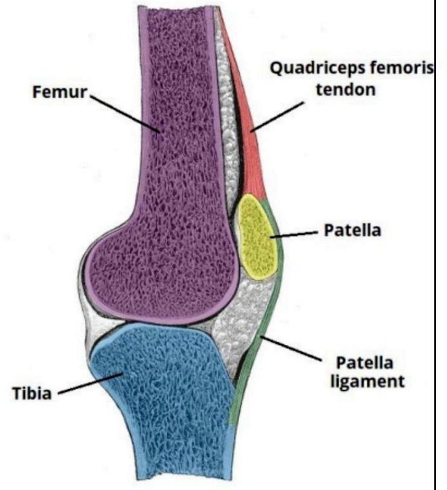
الأسطح المفصليةArticulating Surfaces
الأسطح المفصليةArticulating Surfaces
The knee joint consists of two articulations – tibiofemoral and patellofemoral. The joint surfaces are lined with hyaline cartilage and are enclosed within a single joint cavity.
يتكوّن مفصل الركبة من مفصلين: الظنبوبي الفخذي والرضفي الفخذي. وأسطح المفصل مبطَّنة بالغضروف الزجاجي ومحاطة بتجويف مفصلي واحد.
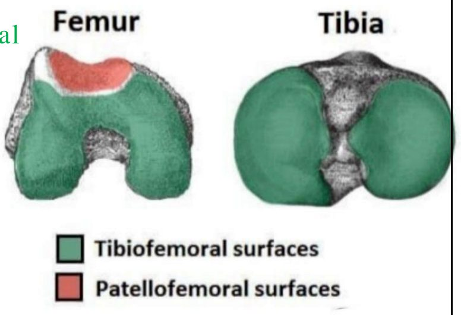
- • Tibiofemoral – medial and lateral condyles of the femur articulate with the tibial condyles. It is the weight-bearing component of the knee joint.الظنبوبي الفخذي: تتمفصل اللقمتان الإنسية والوحشية لعظم الفخذ مع لقمتي الظنبوب، وهو الجزء الحامل للوزن في مفصل الركبة.
- • Patellofemoral – anterior aspect of the distal femur articulates with the patella. It allows the tendon of the quadriceps femoris (knee extensor) to be inserted directly over the knee – increasing the efficiency of the muscle.الرضفي الفخذي: يتمفصل الوجه الأمامي للطرف البعيد من عظم الفخذ مع الرضفة، فيسمح لوتر العضلة رباعية الرؤوس الفخذية (باسطة الركبة) بالارتكاز مباشرة فوق الركبة، مما يزيد كفاءة العضلة.
As the patella is both formed and resides within the quadriceps femoris tendon, it provides a fulcrum to increase power of the knee extensor and serves as a stabilising structure that reduces frictional forces placed on femoral condyles
وبما أن الرضفة تتكوّن داخل وتر العضلة رباعية الرؤوس الفخذية وتستقر فيه، فإنها توفّر نقطة ارتكاز تزيد قوة العضلة الباسطة للركبة، وتعمل كبنية مثبِّتة تقلل قوى الاحتكاك الواقعة على لقمتي الفخذ.
كبسولة مفصل الركبةKnee Joint Capsule
كبسولة مفصل الركبةKnee Joint Capsule
The joint capsule is a fibrous envelope that surrounds the knee joint, providing stability and enclosing the synovial membrane which secretes synovial fluid for lubrication.
كبسولة المفصل غلاف ليفي يحيط بمفصل الركبة، ويوفّر الثبات، ويحتوي الغشاء الزليلي الذي يفرز السائل الزليلي للتزليق.
البنية:Structure:
- • Fibrous layer (outer): Strong connective tissue attached to the margins of femur, tibia, and patella.الطبقة الليفية (الخارجية): نسيج ضام قوي يتصل بحواف عظم الفخذ والظنبوب والرضفة.
- • Synovial membrane (inner): Lines the capsule internally (except over cartilage) and produces synovial fluid.الغشاء الزليلي (الداخلي): يبطّن الكبسولة من الداخل (عدا فوق الغضروف) وينتج السائل الزليلي.
الوظائف:Functions:
- 1. Stabilizes the joint – works with ligaments to maintain knee integrity.تثبيت المفصل: تعمل مع الأربطة للحفاظ على سلامة الركبة.
- 2. Lubrication – synovial fluid reduces friction and nourishes cartilage.التزليق: يقلل السائل الزليلي الاحتكاك ويغذّي الغضروف.
- 3. Allows movement – accommodates flexion, extension, and slight rotation.السماح بالحركة: تتيح الثني والبسط والدوران الطفيف.
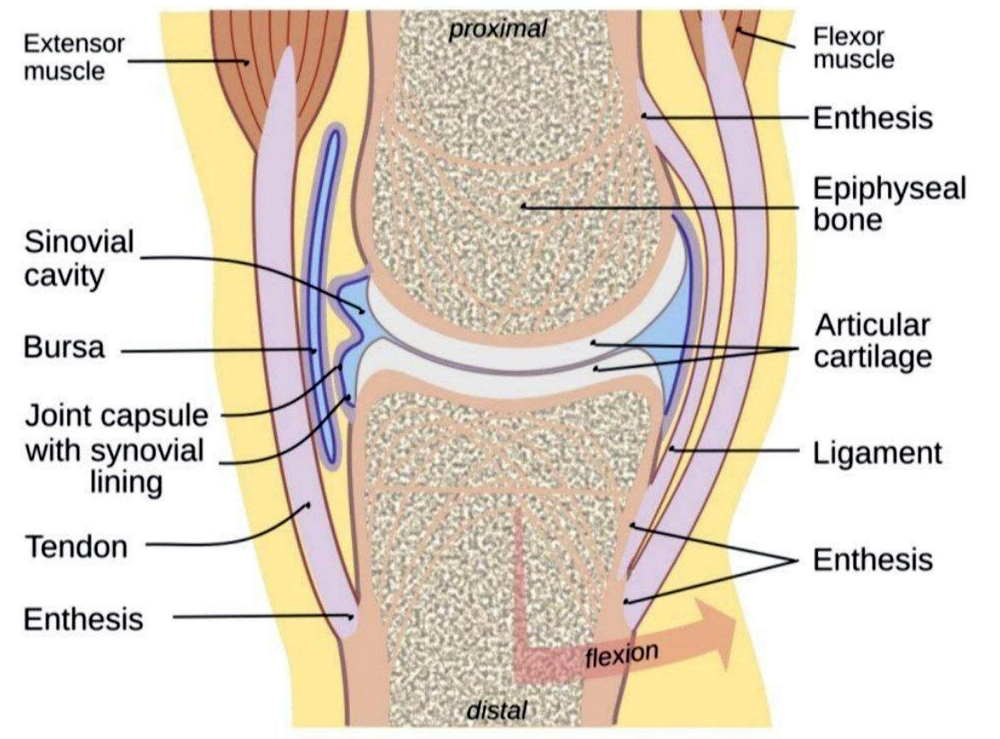
الغضروفان الهلاليانMenisci (meniscus)
الغضروفان الهلاليانMenisci (meniscus)
The medial and lateral menisci are C-shaped fibrocartilage structures found inside the knee joint.
الغضروفان الهلاليان الإنسي والوحشي بنيتان من الغضروف الليفي على شكل حرف C تقعان داخل مفصل الركبة.
الوظائف الرئيسة:Main functions:
- 1. Increase joint stability – by deepening the surface of the tibia where the femur sits.زيادة ثبات المفصل: بتعميق سطح الظنبوب الذي يستقر عليه عظم الفخذ.
- 2. Absorb shock – by spreading the forces across a larger surface area during movement.امتصاص الصدمات: بتوزيع القوى على مساحة سطح أكبر أثناء الحركة.
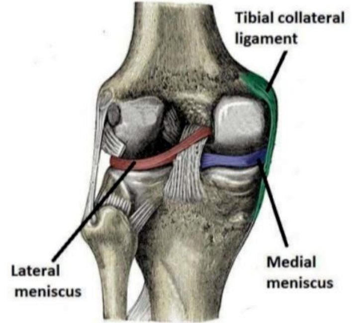
الاتصالات:Attachments:
- • Both menisci are attached at their ends to the intercondylar area of the tibia.يتصل الغضروفان الهلاليان كلاهما من طرفيهما بالمنطقة بين لقمتي الظنبوب.
- • The medial meniscus is also attached to the medial collateral ligament (MCL) and the joint capsule, making it less mobile and more prone to injury when the MCL is damaged.يتصل الغضروف الهلالي الإنسي أيضاً بالرباط الجانبي الإنسي (MCL) وبكبسولة المفصل، مما يجعله أقل حركة وأكثر عرضة للإصابة عند تضرر الرباط الجانبي الإنسي.
- • The lateral meniscus is smaller and more mobile because it has no extra attachments.الغضروف الهلالي الوحشي أصغر حجماً وأكثر حركة لأنه لا يملك اتصالات إضافية.
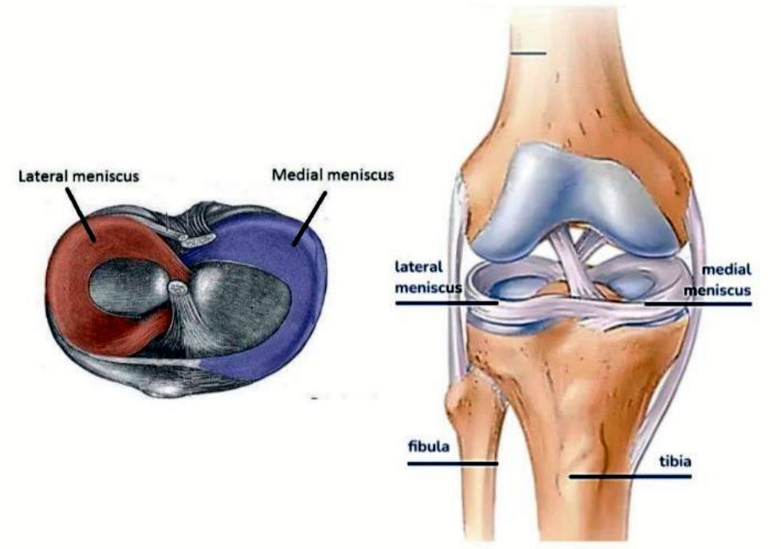
الأجربةBursae
الأجربةBursae
A bursa is a sac-like structure containing a small amount of synovial fluid. It functions to decrease friction between tendons , bone, and skin during movement. There are four main bursae found in the knee joint:
الجراب بنية تشبه الكيس تحتوي كمية صغيرة من السائل الزليلي، وظيفتها تقليل الاحتكاك بين الأوتار والعظم والجلد أثناء الحركة. توجد أربعة أجربة رئيسة في مفصل الركبة:
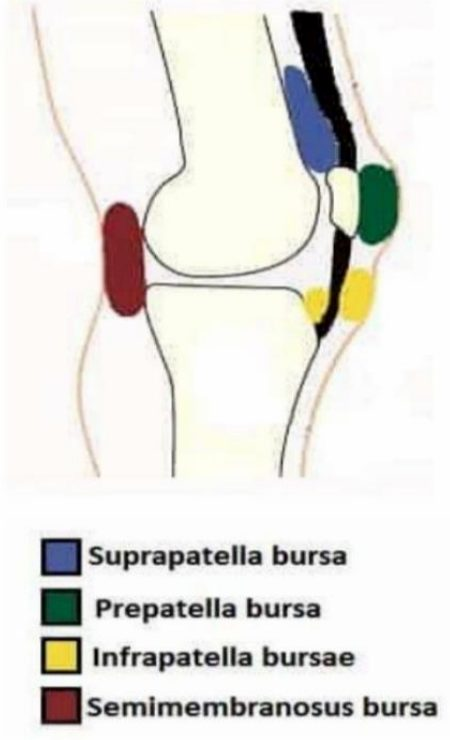
- • Suprapatellar bursa – located between the quadriceps femoris and the femur.الجراب فوق الرضفة: يقع بين العضلة رباعية الرؤوس الفخذية وعظم الفخذ.
- • Prepatellar bursa – located between the apex of the patella and the skin.الجراب أمام الرضفة: يقع بين قمة الرضفة والجلد.
- • Infrapatellar bursa – split into deep and superficial. The deep bursa lies between the tibia and the patella ligament. The superficial lies between the patella ligament and the skin.الجراب تحت الرضفة: ينقسم إلى عميق وسطحي. يقع الجراب العميق بين الظنبوب ورباط الرضفة، ويقع السطحي بين رباط الرضفة والجلد.
- • Semimembranosus bursa – located posterior to the knee joint, between the semimembranosus muscle and the medial head of the gastrocnemius.الجراب نصف الغشائي: يقع خلف مفصل الركبة، بين العضلة نصف الغشائية والرأس الإنسي للعضلة التوأمية (عضلة الساق).
الأربطةLigaments
الأربطةLigaments
The major ligaments in the knee joint are:
الأربطة الرئيسة في مفصل الركبة هي:
- • 1- Patellar ligament – a continuation of the quadriceps femoris tendon distal to the patella. It attaches to the tibial tuberosity.١- الرباط الرضفي: امتداد لوتر العضلة رباعية الرؤوس الفخذية يقع أسفل الرضفة (القاصي للرضفة)، ويرتبط بحدبة الظنبوب.
- • 2- Collateral ligaments – two strap-like ligaments. They act to stabilise the hinge motion of the knee, preventing excessive medial or lateral movement٢- الرباطان الجانبيان: رباطان يشبهان الحزام، يثبّتان الحركة الرزّية للركبة ويمنعان الحركة المفرطة إلى الجانب الإنسي أو الوحشي.
- • Medial collateral ligament – wide and flat ligament, found on the medial side of the joint. Proximally, it attaches to the medial epicondyle of the femur, distally it attaches to the medial condyle of the tibia.الرباط الجانبي الإنسي: رباط عريض ومسطح يقع على الجانب الإنسي من المفصل؛ يرتبط قريباً باللقيمة الإنسية لعظم الفخذ، وبعيداً باللقمة الإنسية للظنبوب.
- • Lateral collateral ligament – thinner and rounder than the medial collateral ligament. It attaches proximally to the lateral epicondyle of the femur and distally to a depression on the lateral surface of the fibular head.الرباط الجانبي الوحشي: أرق وأكثر استدارة من الرباط الجانبي الإنسي؛ يرتبط قريباً باللقيمة الوحشية لعظم الفخذ، وبعيداً بمنخفض على السطح الوحشي لرأس الشظية.
- • 3- Cruciate Ligaments – these two ligaments connect the femur and the tibia. In doing so, they cross each other, hence the term ‘cruciate’(Latin for like a cross)٣- الرباطان الصليبيان: يربط هذان الرباطان عظم الفخذ بالظنبوب، وبذلك يتقاطعان؛ ومن هنا جاء مصطلح «صليبي» (كلمة لاتينية تعني ما يشبه الصليب).
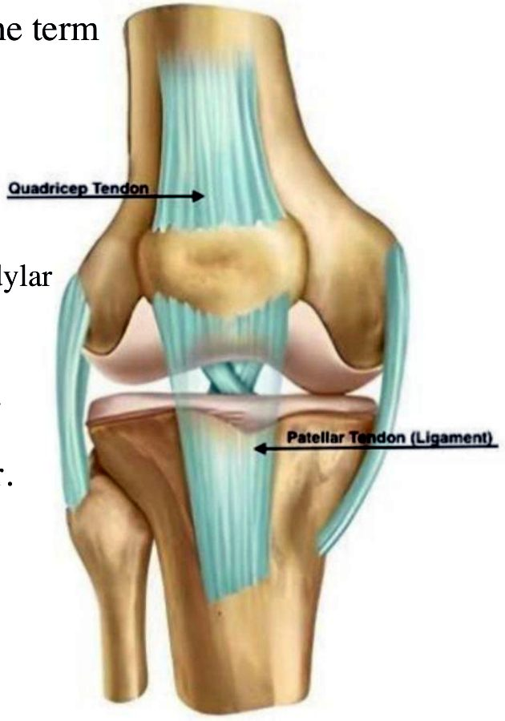
- • Anterior cruciate ligament – attaches at the anterior intercondylar region of the tibia where it blends with the medial meniscus. It ascends posteriorly to attach to the femur in the intercondylar fossa. It prevents anterior dislocation of the tibia onto the femur.الرباط الصليبي الأمامي: يرتبط بالمنطقة الأمامية بين لقمتي الظنبوب حيث يمتزج بالغضروف الهلالي الإنسي، ثم يصعد إلى الخلف ليرتبط بعظم الفخذ في الحفرة بين اللقمتين، ويمنع انزياح الظنبوب إلى الأمام على عظم الفخذ.
- • Posterior cruciate ligament – attaches at the posterior intercondylar region of the tibia and ascends anteriorly to attach to the anteromedial femoral condyle. It prevents posterior dislocation of the tibia onto the femur.الرباط الصليبي الخلفي: يرتبط بالمنطقة الخلفية بين لقمتي الظنبوب ويصعد إلى الأمام ليرتبط باللقمة الفخذية الأمامية الإنسية، ويمنع انزياح الظنبوب إلى الخلف على عظم الفخذ.
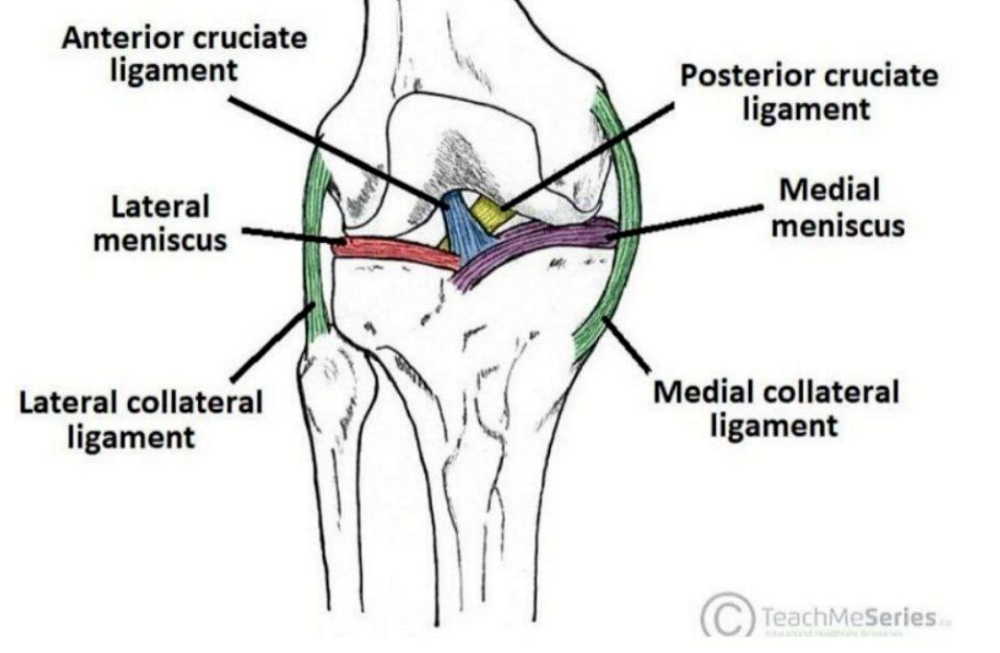
الملامح الشعاعية لمفصل الركبةRadiological features of the knee joint
الملامح الشعاعية لمفصل الركبةRadiological features of the knee joint
Radiological features of the knee joint include the bones (femur, tibia, fibula, patella), ligaments (ACL, PCL, MCL, LCL), menisci, articular cartilage, tendons (quadriceps, patellar), and muscles.
تشمل الملامح الشعاعية لمفصل الركبة العظام (عظم الفخذ، والظنبوب، والشظية، والرضفة)، والأربطة (ACL وPCL وMCL وLCL)، والغضروفين الهلاليين، والغضروف المفصلي، والأوتار (وتر العضلة رباعية الرؤوس ووتر الرضفة)، والعضلات.
Standard X-rays primarily show bone structure and alignment, while MRI provides detailed visualization of soft tissues like ligaments, tendons, and cartilage, making it the preferred method for evaluating injuries to these structures. Common radiological findings include joint space narrowing, osteophytes, cysts, and subchondral irregularities in conditions like osteoarthritis, and effusion, which is fluid in the joint capsule, often displacing the patella anteriorly.
تُظهر الأشعة السينية القياسية أساساً بنية العظام ومحاذاتها، بينما يوفّر التصوير بالرنين المغناطيسي (MRI) رؤية مفصّلة للأنسجة الرخوة كالأربطة والأوتار والغضاريف، فيكون الطريقة المفضّلة لتقييم إصابات هذه البنى. وتشمل الموجودات الشعاعية الشائعة تضيّق الحيّز المفصلي، والنتوءات العظمية، والأكياس، وعدم انتظام ما تحت الغضروف في حالات مثل الفُصال العظمي (التهاب المفاصل التنكسي)، والانصباب، وهو سائل في كبسولة المفصل يزيح الرضفة غالباً إلى الأمام.
الأشعة السينية البسيطة للركبةPlain X-ray (Radiography) of the Knee
الأشعة السينية البسيطة (التصوير الشعاعي) للركبةPlain X-ray (Radiography) of the Knee
Anatomical Importance:
الأهمية التشريحية:
Plain X-ray helps visualize the bony structures of the knee joint. It shows the alignment, joint space, bone density, and presence of fractures or deformities. It provides a clear anatomical view of the femur, tibia, fibula, and patella, making it essential for assessing bone integrity and joint relationships.
تساعد الأشعة السينية البسيطة على رؤية البنى العظمية لمفصل الركبة؛ فهي تُظهر محاذاة العظام، والحيّز المفصلي، وكثافة العظم، ووجود الكسور أو التشوهات. كما توفّر منظراً تشريحياً واضحاً لعظم الفخذ والظنبوب والشظية والرضفة، مما يجعلها ضرورية لتقييم سلامة العظام والعلاقات المفصلية.
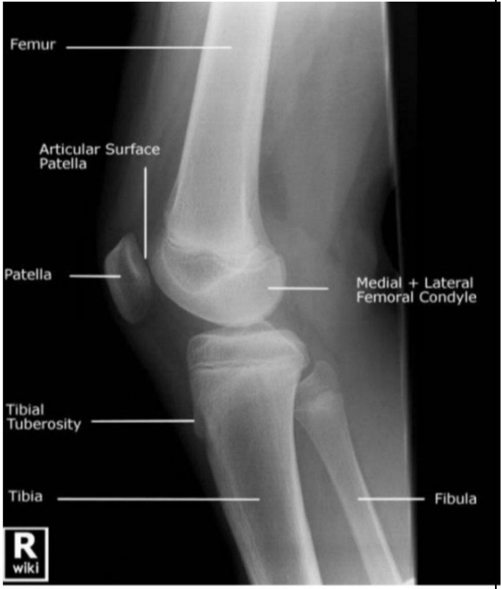
The lateral X-ray The lateral view of the knee provides a clear image of specific structures, including:
الأشعة السينية الجانبية: يوفّر المنظر الجانبي للركبة صورة واضحة لبنى محددة، منها:
- 1. Patella (kneecap) – shows its position and alignment with the femur.الرضفة (عظمة رأس الركبة): تُظهر موضعها ومحاذاتها مع عظم الفخذ.
- 2. Femoral and tibial condyles – clearl visualized from the side.اللقمتان الفخذية والظنبوبية: تُرى بوضوح من الجانب.
- 3. Joint space – helps assess joint effusion or narrowing.الحيّز المفصلي: يساعد على تقييم الانصباب المفصلي أو التضيّق.
- 4. Posterior cruciate ligament (PCL) area and soft tissues – seen indirectly.منطقة الرباط الصليبي الخلفي (PCL) والأنسجة الرخوة: تُرى بصورة غير مباشرة.
- 5. Fractures – especially behind the patella or in the femoral condyles, are better detected.الكسور: تُكتشف بصورة أفضل، ولا سيما خلف الرضفة أو في اللقمتين الفخذيتين.
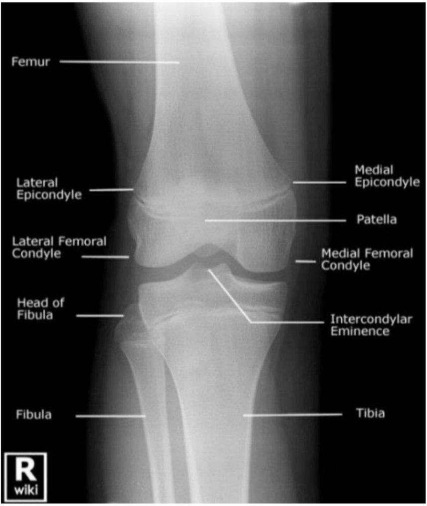
The AP view of the knee provides a front-to-back image that clearly shows:
يوفّر المنظر الأمامي الخلفي للركبة صورة من الأمام إلى الخلف تُظهر بوضوح ما يلي:
- 1. Femoral and tibial condyles – their alignment and symmetry.اللقمتان الفخذية والظنبوبية: محاذاتهما وتناظرهما.
- 2. Joint space width – helps assess cartilage loss or joint narrowing.عرض الحيّز المفصلي: يساعد على تقييم فقدان الغضروف أو تضيّق المفصل.
- 3. Patella position – seen in relation to the femur.موضع الرضفة: يُرى بالنسبة لعظم الفخذ.
- 4. Bone integrity – reveals fractures, deformities, or osteoarthritis changes.سلامة العظم: تكشف الكسور أو التشوهات أو تغيّرات الفُصال العظمي.
- 5. Overall alignment of the knee joint – useful for detecting varus or valgus deformities (bow-leg or knock-knee).المحاذاة العامة لمفصل الركبة: مفيدة للكشف عن تشوهات الفحج أو الروَح (تقوّس الساقين أو انحناء الركبتين إلى الداخل).
التصوير المقطعي المحوسب للركبةCT Scan (Computed Tomography) of the Knee
التصوير المقطعي المحوسب (CT) للركبة – القيمة التشريحية:CT Scan (Computed Tomography) of the Knee – Anatomical Value:
A CT scan provides detailed cross-sectional images of the knee, giving a clearer and more precise view of the bony structures than a regular X-ray.
يوفّر التصوير المقطعي المحوسب صوراً مقطعية مفصّلة للركبة، فيعطي رؤية أوضح وأدق للبنى العظمية من الأشعة السينية الاعتيادية.
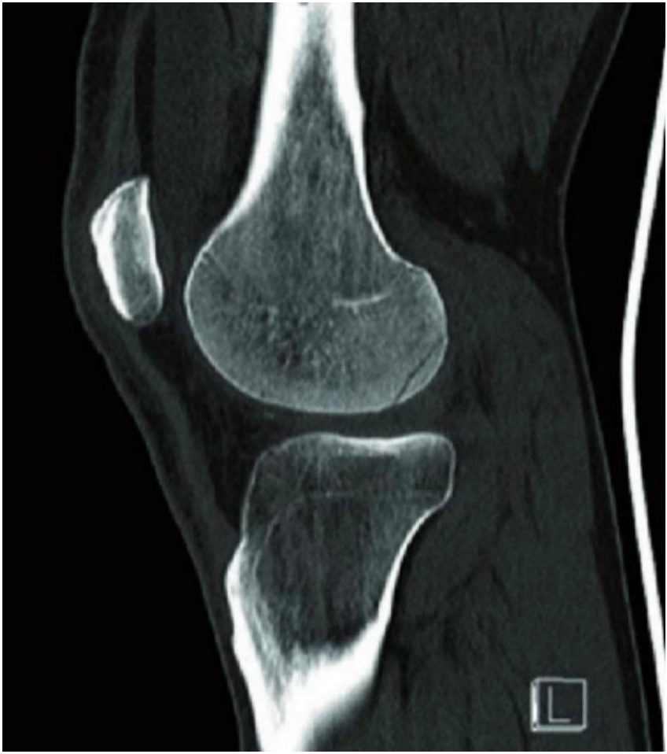
It helps in:
يساعد في:
- 1. Detailed bone anatomy – shows the shape, thickness, and fine details of the femur, tibia, fibula, and patella.تشريح العظام المفصّل: يُظهر شكل عظم الفخذ والظنبوب والشظية والرضفة وسمكها وتفاصيلها الدقيقة.
- 2. Detecting complex fractures – especially those involving the joint surface or hidden areas not visible on X-ray.كشف الكسور المعقّدة: ولا سيما التي تصيب السطح المفصلي أو المناطق الخفية غير المرئية على الأشعة السينية.
- 3. Evaluating bone alignment – useful before and after surgery.تقييم محاذاة العظام: مفيد قبل الجراحة وبعدها.
- 4. Assessing joint space and bone deformities in 3D reconstruction.تقييم الحيّز المفصلي وتشوهات العظام في إعادة البناء ثلاثية الأبعاد.
- 5. Guiding surgical planning – by giving accurate measurements and spatial relationships of the knee bones.توجيه التخطيط الجراحي: بإعطاء قياسات دقيقة وعلاقات مكانية لعظام الركبة.
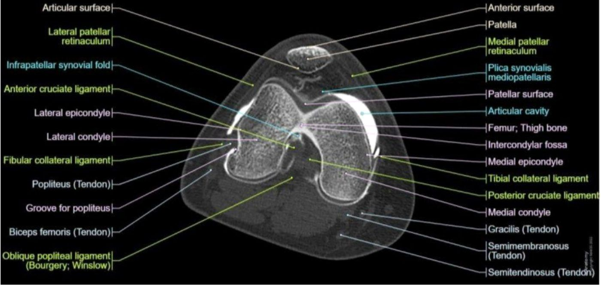
الرنين المغناطيسي للركبةMRI of the Knee
التصوير بالرنين المغناطيسي (MRI) للركبة – القيمة التشريحية والوظيفية:MRI of the Knee – Anatomical and Functional Value:
Magnetic Resonance Imaging (MRI) provides highly detailed images of all knee structures, including bones, cartilage, ligaments, tendons, and soft tissues. Compared to X-ray or CT, MRI offers precise anatomical and functional information.
يوفّر التصوير بالرنين المغناطيسي صوراً عالية التفصيل لجميع بنى الركبة، ومنها العظام والغضاريف والأربطة والأوتار والأنسجة الرخوة. وبالمقارنة مع الأشعة السينية أو المقطعي، يعطي الرنين معلومات تشريحية ووظيفية دقيقة.
What MRI shows in the knee:
ماذا يُظهر الرنين المغناطيسي في الركبة:
- 1. Bones: Clearly visualizes the bony structure and can detect small fractures or bone marrow edema.العظام: يُظهر البنية العظمية بوضوح ويمكنه كشف الكسور الصغيرة أو وذمة نقي العظم.
- 2. Menisci: Reveals tears in the medial or lateral meniscus and shows their shape and integrity.الغضروفان الهلاليان: يكشف التمزقات في الغضروف الهلالي الإنسي أو الوحشي ويبيّن شكلهما وسلامتهما.
- 3. Articular Cartilage: Evaluates cartilage health, detecting wear or early degeneration.الغضروف المفصلي: يقيّم صحة الغضروف ويكشف التآكل أو التنكّس المبكر.
- 4. Ligaments: Clearly shows the ACL, PCL, MCL, and LCL, allowing detection of partial or complete tears.الأربطة: يُظهر بوضوح الأربطة ACL وPCL وMCL وLCL، مما يتيح كشف التمزقات الجزئية أو الكاملة.
- 5. Tendons and Muscles: Assesses the quadriceps and patellar tendons and surrounding muscles for injuries.الأوتار والعضلات: يقيّم وتر العضلة رباعية الرؤوس ووتر الرضفة والعضلات المحيطة بحثاً عن الإصابات.
- 6. Soft tissues and synovial fluid: Detects joint effusion, inflammation, and bursae.الأنسجة الرخوة والسائل الزليلي: يكشف الانصباب المفصلي والالتهاب والأجربة.
- 7. Indirect functional assessment: Provides information about joint stability and the effect of injuries on ligament or tendon function.التقييم الوظيفي غير المباشر: يعطي معلومات عن ثبات المفصل وأثر الإصابات في وظيفة الأربطة أو الأوتار.
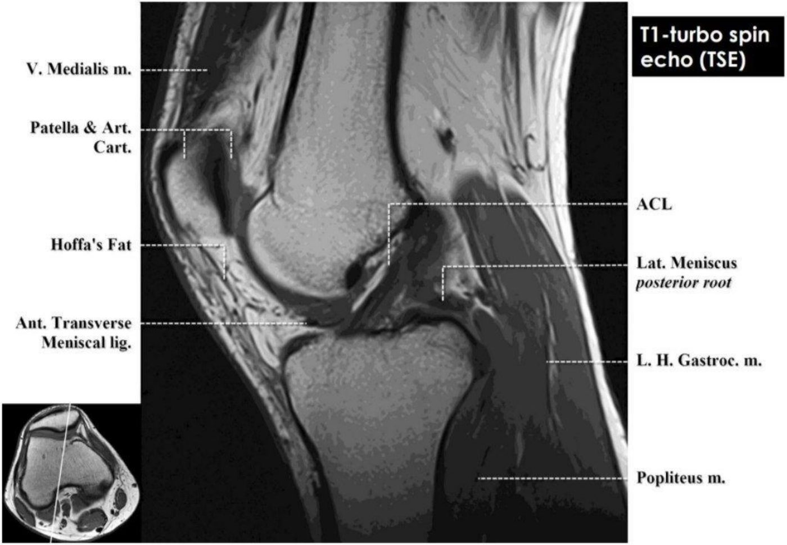
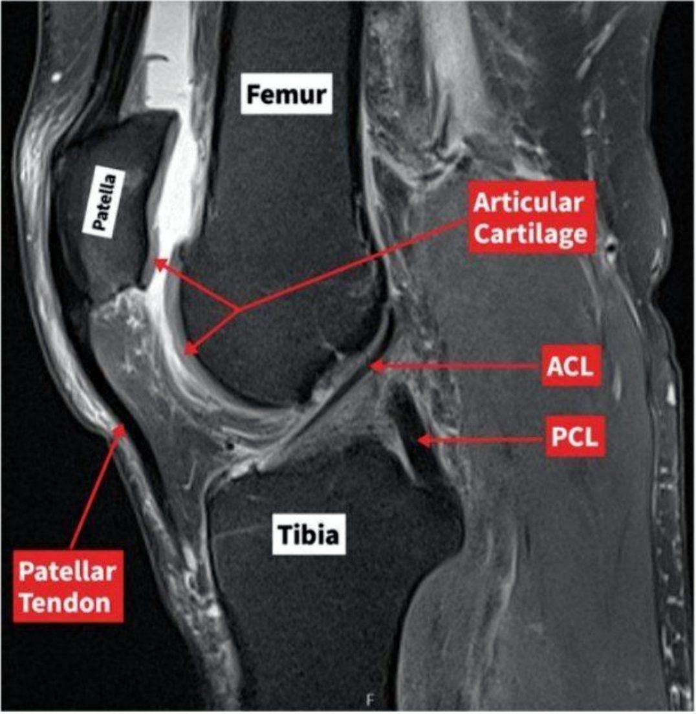
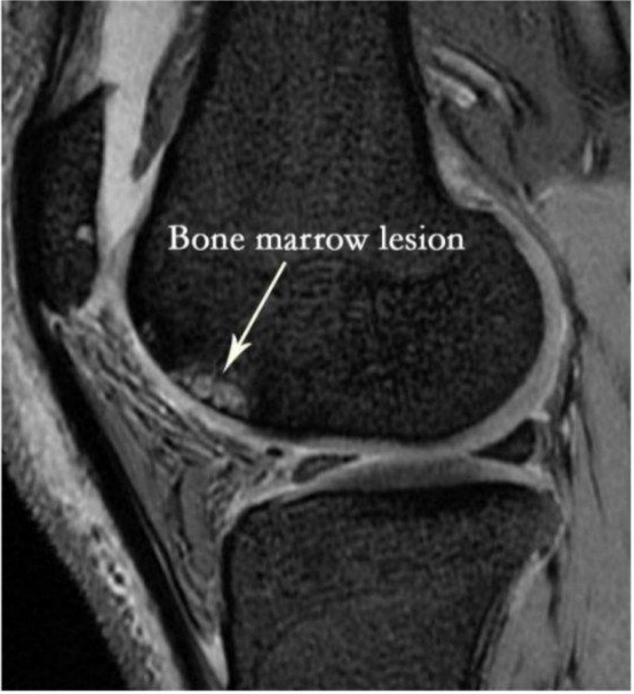
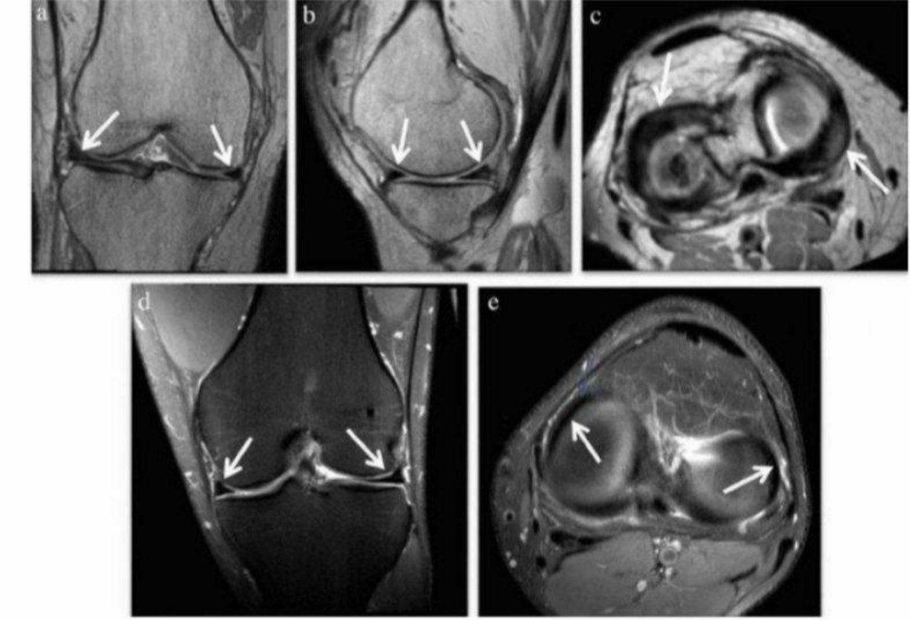
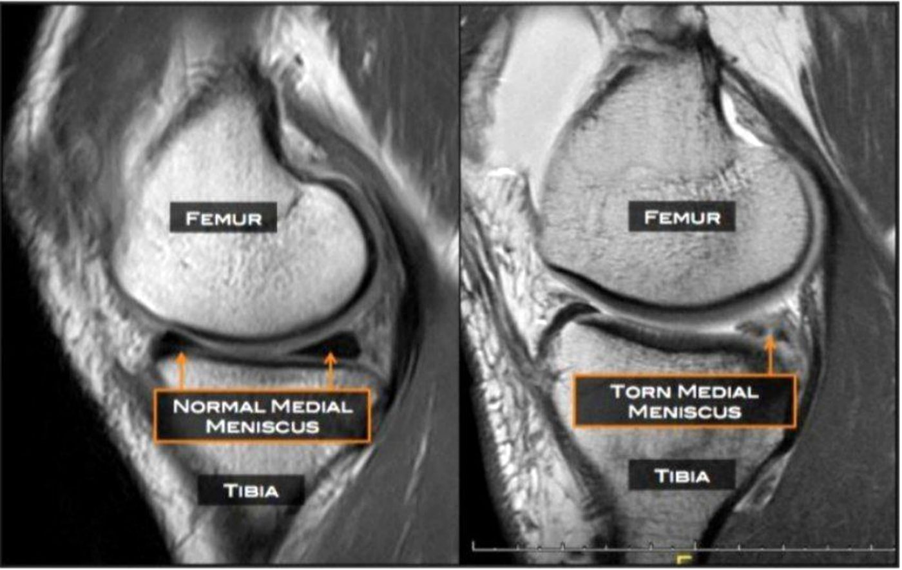
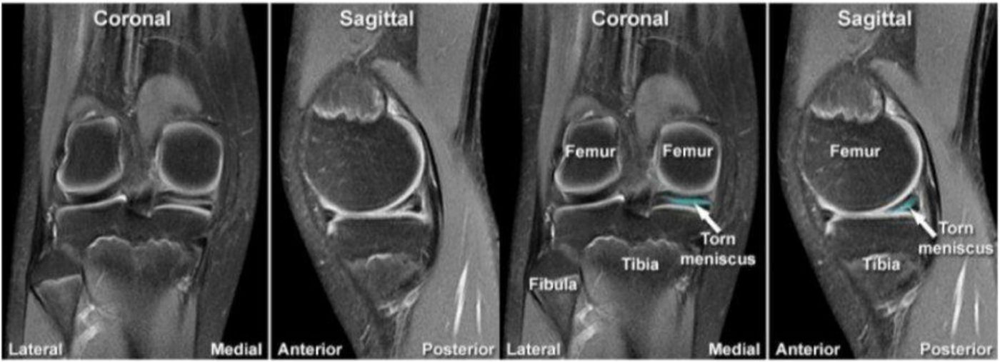
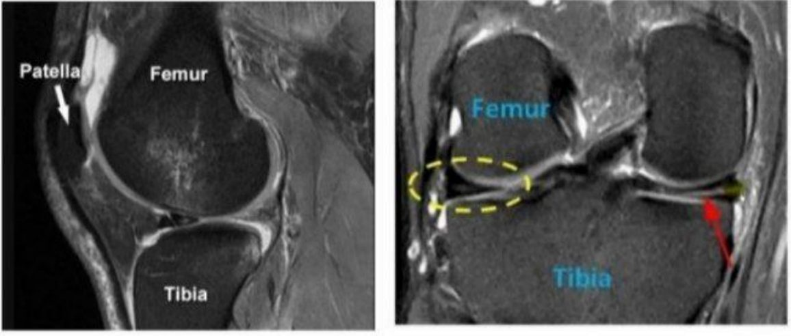
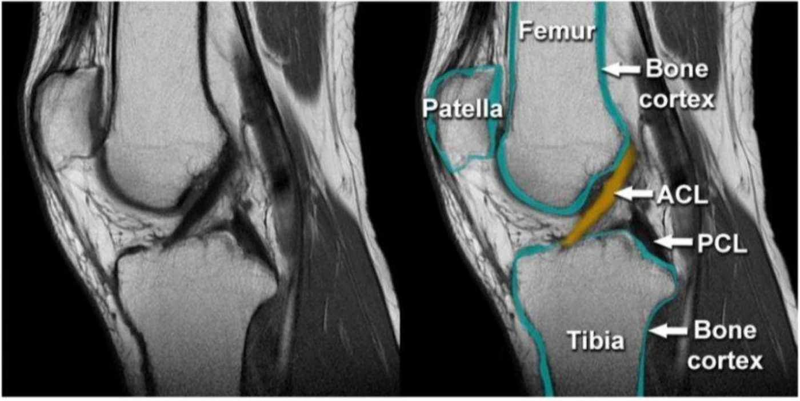
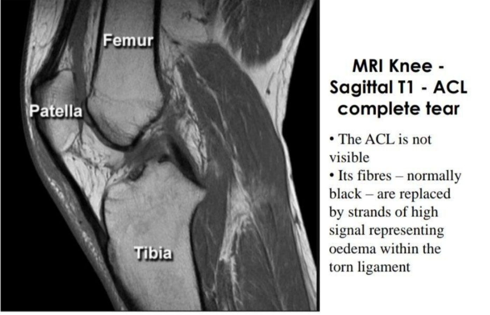
المحاضرة مسموعة
نص الأستاذ بالإنكليزي مثل الأصل · 10.0 دقيقة. اضغط أي جملة تسمعها، أو مصطلح منقّط تسمع لفظه ومعناه.
The Knee Jointمفصل الركبة
The Knee Joint
Lecture 6 : Knee Joint: Structure, Ligaments, Internal Features, and Radiological Aspects
The knee joint
The knee joint is the largest and one of the most complex joint in the body ,which mainly allows for flexion and extension (and a small degree of medial and lateral rotation( It is made up of two joints, tibiofemoral and patellofemoral joints.
The knee joint is a hinge type synovial joint, which mainly allows for flexion and extension (and a small degree of medial and lateral rotation).
Articulating Surfacesالأسطح المفصلية
Articulating Surfaces
Articulating Surfaces
The knee joint consists of two articulations – tibiofemoral and patellofemoral. The joint surfaces are lined with hyaline cartilage and are enclosed within a single joint cavity.
Tibiofemoral – medial and lateral condyles of the femur articulate with the tibial condyles. It is the weight-bearing component of the knee joint.
Patellofemoral – anterior aspect of the distal femur articulates with the patella. It allows the tendon of the quadriceps femoris (knee extensor) to be inserted directly over the knee – increasing the efficiency of the muscle.
As the patella is both formed and resides within the quadriceps femoris tendon, it provides a fulcrum to increase power of the knee extensor and serves as a stabilising structure that reduces frictional forces placed on femoral condyles
Knee Joint Capsuleكبسولة مفصل الركبة
Knee Joint Capsule
Knee Joint Capsule
The joint capsule is a fibrous envelope that surrounds the knee joint, providing stability and enclosing the synovial membrane which secretes synovial fluid for lubrication.
Structure:
Fibrous layer (outer): Strong connective tissue attached to the margins of femur, tibia, and patella.
Synovial membrane (inner): Lines the capsule internally (except over cartilage) and produces synovial fluid.
Functions:
Stabilizes the joint – works with ligaments to maintain knee integrity.
Lubrication – synovial fluid reduces friction and nourishes cartilage.
Allows movement – accommodates flexion, extension, and slight rotation.
Menisci (meniscus)الغضروفان الهلاليان
Menisci (meniscus)
Menisci (meniscus)
The medial and lateral menisci are C-shaped fibrocartilage structures found inside the knee joint.
Main functions:
Increase joint stability – by deepening the surface of the tibia where the femur sits.
Absorb shock – by spreading the forces across a larger surface area during movement.
Attachments:
Both menisci are attached at their ends to the intercondylar area of the tibia.
The medial meniscus is also attached to the medial collateral ligament (MCL) and the joint capsule, making it less mobile and more prone to injury when the MCL is damaged.
The lateral meniscus is smaller and more mobile because it has no extra attachments.
Bursaeالأجربة
Bursae
Bursae
A bursa is a sac-like structure containing a small amount of synovial fluid. It functions to decrease friction between tendons , bone, and skin during movement. There are four main bursae found in the knee joint:
Suprapatellar bursa – located between the quadriceps femoris and the femur.
Prepatellar bursa – located between the apex of the patella and the skin.
Infrapatellar bursa – split into deep and superficial. The deep bursa lies between the tibia and the patella ligament. The superficial lies between the patella ligament and the skin.
Semimembranosus bursa – located posterior to the knee joint, between the semimembranosus muscle and the medial head of the gastrocnemius.
Ligamentsالأربطة
Ligaments
Ligaments
The major ligaments in the knee joint are:
1- Patellar ligament – a continuation of the quadriceps femoris tendon distal to the patella. It attaches to the tibial tuberosity.
2- Collateral ligaments – two strap-like ligaments. They act to stabilise the hinge motion of the knee, preventing excessive medial or lateral movement
Medial collateral ligament – wide and flat ligament, found on the medial side of the joint. Proximally, it attaches to the medial epicondyle of the femur, distally it attaches to the medial condyle of the tibia.
Lateral collateral ligament – thinner and rounder than the medial collateral ligament. It attaches proximally to the lateral epicondyle of the femur and distally to a depression on the lateral surface of the fibular head.
3- Cruciate Ligaments – these two ligaments connect the femur and the tibia. In doing so, they cross each other, hence the term ‘cruciate’(Latin for like a cross)
Anterior cruciate ligament – attaches at the anterior intercondylar region of the tibia where it blends with the medial meniscus. It ascends posteriorly to attach to the femur in the intercondylar fossa. It prevents anterior dislocation of the tibia onto the femur.
Posterior cruciate ligament – attaches at the posterior intercondylar region of the tibia and ascends anteriorly to attach to the anteromedial femoral condyle. It prevents posterior dislocation of the tibia onto the femur.
Radiological features of the knee jointالملامح الشعاعية لمفصل الركبة
Radiological features of the knee joint
Radiological features of the knee joint
Radiological features of the knee joint include the bones (femur, tibia, fibula, patella), ligaments (ACL, PCL, MCL, LCL), menisci, articular cartilage, tendons (quadriceps, patellar), and muscles.
Standard X-rays primarily show bone structure and alignment, while MRI provides detailed visualization of soft tissues like ligaments, tendons, and cartilage, making it the preferred method for evaluating injuries to these structures. Common radiological findings include joint space narrowing, osteophytes, cysts, and subchondral irregularities in conditions like osteoarthritis, and effusion, which is fluid in the joint capsule, often displacing the patella anteriorly.
Plain X-ray (Radiography) of the Kneeالأشعة السينية البسيطة للركبة
Plain X-ray (Radiography) of the Knee
Plain X-ray (Radiography) of the Knee
Anatomical Importance:
Plain X-ray helps visualize the bony structures of the knee joint. It shows the alignment, joint space, bone density, and presence of fractures or deformities. It provides a clear anatomical view of the femur, tibia, fibula, and patella, making it essential for assessing bone integrity and joint relationships.
The lateral X-ray The lateral view of the knee provides a clear image of specific structures, including:
Patella (kneecap) – shows its position and alignment with the femur.
Femoral and tibial condyles – clearl visualized from the side.
Joint space – helps assess joint effusion or narrowing.
Posterior cruciate ligament (PCL) area and soft tissues – seen indirectly.
Fractures – especially behind the patella or in the femoral condyles, are better detected.
The AP view of the knee provides a front-to-back image that clearly shows:
Femoral and tibial condyles – their alignment and symmetry.
Joint space width – helps assess cartilage loss or joint narrowing.
Patella position – seen in relation to the femur.
Bone integrity – reveals fractures, deformities, or osteoarthritis changes.
Overall alignment of the knee joint – useful for detecting varus or valgus deformities (bow-leg or knock-knee).
CT Scan (Computed Tomography) of the Kneeالتصوير المقطعي المحوسب للركبة
CT Scan (Computed Tomography) of the Knee
CT Scan (Computed Tomography) of the Knee – Anatomical Value:
A CT scan provides detailed cross-sectional images of the knee, giving a clearer and more precise view of the bony structures than a regular X-ray.
It helps in:
Detailed bone anatomy – shows the shape, thickness, and fine details of the femur, tibia, fibula, and patella.
Detecting complex fractures – especially those involving the joint surface or hidden areas not visible on X-ray.
Evaluating bone alignment – useful before and after surgery.
Assessing joint space and bone deformities in 3D reconstruction.
Guiding surgical planning – by giving accurate measurements and spatial relationships of the knee bones.
MRI of the Kneeالرنين المغناطيسي للركبة
MRI of the Knee
MRI of the Knee – Anatomical and Functional Value:
Magnetic Resonance Imaging (MRI) provides highly detailed images of all knee structures, including bones, cartilage, ligaments, tendons, and soft tissues. Compared to X-ray or CT, MRI offers precise anatomical and functional information.
What MRI shows in the knee:
Bones: Clearly visualizes the bony structure and can detect small fractures or bone marrow edema.
Menisci: Reveals tears in the medial or lateral meniscus and shows their shape and integrity.
Articular Cartilage: Evaluates cartilage health, detecting wear or early degeneration.
Ligaments: Clearly shows the ACL, PCL, MCL, and LCL, allowing detection of partial or complete tears.
Tendons and Muscles: Assesses the quadriceps and patellar tendons and surrounding muscles for injuries.
Soft tissues and synovial fluid: Detects joint effusion, inflammation, and bursae.
Indirect functional assessment: Provides information about joint stability and the effect of injuries on ligament or tendon function.
33 سؤال من نص المحاضرة، ويّا «ليش صح» بعد كل جواب.
ابدأ الاختباراضغط أي مصطلح منقّط تسمع لفظه ومعناه.